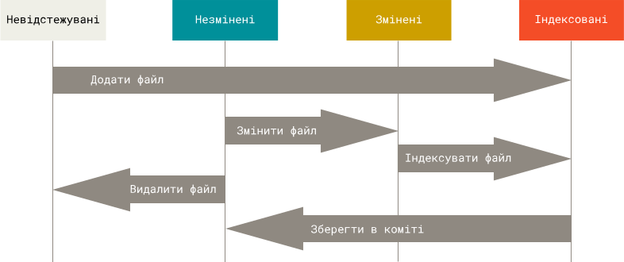

Додавання файлів у Git
Створивши директорію проекту, ініціалізувавши та налаштувавши Git-репозиторій, все готово до повноцінної роботи з системою контролю версій. На минулому уроці були створені різноманітні файли, однак Git ще за ними не слідкує, у репозиторії не зберігається жоден файл, і їх зміни не відстежуються — ми все ще маємо чистий проект. Щоб це виправити, необхідно додати файли у індексну область. Нагадаємо, що ми знаходимось в директорії проекту `pyhello`, яка містить усі файли проекту, тому додамо її повний зміст за допомогою команди:
У цій команді . означає поточну директорію.
В результаті виконання команди невідстежувані файли були представлені системі Git і тепер їх стан змінився з невідстежуваних до індексованих. Перевіримо статус файлів у директорії за допомогою команди:
Як бачимо, з'явився цілий список файлів, які щойно були додані в індексовану область.
Однак, поточна версія файлів ще не збережена. Для її збереження необхідно виконати «коміт» — тобто записати знімок версії файлів з області індексування в репозиторій. Кожен коміт повинен мати супроводжуюче повідомлення, яке характеризує внесені зміни. Оскільки ми тільки налаштували репозиторій та це буде наш перший коміт, текстом нашого повідомлення буде «Initial commit». Для виконання описаних дій виконуємо команду:
Після завершення виконання команди поточні версії файлів з індексованої області будуть збережені у Git-репозиторії.
Щоб наочніше зрозуміти процес додавання файлів, а також загальної роботи з файлами у Git, розглянемо їх «життєвий цикл» (рис. 7.1)
Рис. 7.1: життєвий цикл файлів при роботі з Git
Видалення файлів
У разі необхідності, якщо непотрібні файли були додані помилково або потреба у файлі зникла, його можна видалити. Наприклад, в директорії test знаходиться і відстежується файл unneeded-test.py, який нам більше не потрібен. Видалимо його:
Перевіримо статус репозиторію після завершення виконання команди:
Як бачимо, видалення файлу unneeded-test.py було додано в область індексації, але не збережено в репозиторій. Щоб підтвердити зміну, виконуємо коміт:
Тепер у поточній версії непотрібний файл видалений.
Перейменування та переміщення файлів
При створенні директорії проекту у директорії docs ми створили файл docfile.txt. Однак, згодом ми вирішили, що таке ім'я неінформативне, і кожен файли документації буде описувати по одній функції з початкового коду програми. Назва таких файлів буде відповідати назві функції. Враховуючи це все, ми вирішили перейменувати файл docfile.txt у pyhello-main.txt.
Для переміщення файлів Git надає функцію mv (move). Як і у Unix-подібних системах, перейменування файлів є переміщенням зі зміною імені файлу без зміни його шляху. Виконаємо бажану дію:
Після завершення виконання команд файл буде переіменований та збережений у репозиторії.